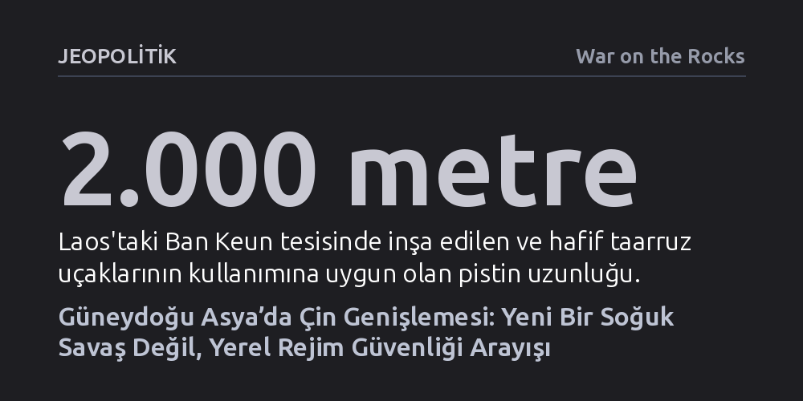

JEOPOLITIK · War on the Rocks · 2026-10-16
Çin'in Laos ve Kamboçya'daki askeri genişlemesi, süper güçler arası bir bloklaşmadan ziyade bölge rejimlerinin iç güvenliklerini ve yerel sınır anlaşmazlıklarını tahkim etme arayışından kaynaklanıyor. Güneydoğu Asya yönetimleri Pekin'in yörüngesine bütünüyle girmek yerine tüm küresel aktörlerle esnek denge siyasetini sürdürüyor.
Güneydoğu Asya'daki stratejik yönelimleri ABD-Çin Soğuk Savaşı kalıbıyla okumanın yanıltıcı olduğunu, asıl belirleyicinin yerel iktidarların iç güvenlik ve komşuluk rekabeti olduğunu gösteriyor.

Çin Savunma Bakanlığı’nın Laos’un Ban Keun bölgesinde ortak bir destek ve eğitim merkezi kurduğunu duyurması, Pekin’in Güneydoğu Asya ana karasındaki askeri varlığını yeni bir aşamaya taşıdı. Resmi olarak bir "askeri üs" şeklinde adlandırılmasa da bu hamle, Çin’in hava kuvvetleri odaklı ilk kamuya açık denizaşırı askeri tesisini oluşturuyor. Uydu görüntüleri, 2.000 metrelik pist üzerinde sekiz hafif taarruz uçağının ve çeşitli destek araçlarının konuşlandırıldığını gösteriyor. Uzun menzilli stratejik bombardıman uçaklarını taşımaya elverişli olmasa bile merkez, Çin’in lojistik ve istihbarat kapasitesini hissedilir ölçüde genişletiyor.
Bu tesis, Çin’in Cibuti’deki lojistik üssü ve Kamboçya’da 2025 yılında faaliyete geçen Ream Deniz Üssü ile birlikte, giderek örülen denizaşırı güvenlik altyapısının yeni bir halkasını temsil ediyor. Laos’taki merkez, Pekin’in bölgedeki varlığını Kamboçya kıyılarının ötesine taşıyarak ana karanın içlerine yayıyor. Bu durum hem Hint Okyanusu’nun doğusundaki Amerikan operasyon alanlarını dolaylı yoldan etkileme potansiyeli taşıyor hem de kendisini karadan ve denizden kuşatılmış hisseden Vietnam gibi komşu ülkelerin güvenlik endişelerini tırmandırıyor.
Washington’daki karar alıcılar Çin’in attığı her askeri adımı refleks olarak ABD-Çin kutuplaşması üzerinden okuma eğiliminde olsa da yerel yönetimleri Pekin’le iş birliğine iten asıl dinamik rejim güvenliğidir. Çin’in bölgedeki en belirleyici avantajı, demokratik değerleri veya insan haklarını şart koşmaksızın otoriter yönetimlerin iktidar bekasını güçlendirebilmesidir. Pekin’in dış politika çerçevesi olan Küresel Güvenlik Girişimi; Kamboçya, Laos, Myanmar askeri cuntası ve Vietnam gibi yönetimlere kitlesel gözetim, siber denetim ve paramiliter polislik gibi yüksek teknolojili iç güvenlik çözümleri sunuyor.
Çin Komünist Partisi’nin kendi iktidarını ulusal güvenlikle özdeşleştiren bütüncül güvenlik anlayışı, iç güvenlik ile dış askeri iş birliği arasındaki sınırları fiilen kaldırıyor. Pekin’in 2026 yılında Kamboçya, Laos ve Vietnam ile yürüttüğü güvenlik diyaloglarını iç güvenlik bakanlıklarını da sürece katarak "3+3" formatına yükseltmesi bunun en somut kanıtıdır. Örneğin Vietnam yönetimi açısından Güney Çin Denizi’nde hak iddialarını tehdit eden Pekin ciddi bir jeopolitik hasım olsa da Çin Komünist Partisi’nin Vietnam rejimini devirme ihtimali yoktur; buna karşılık rejim, içeriden gelebilecek toplumsal bir kalkışmayı ve Batı kaynaklı demokratikleşme baskısını varoluşsal bir tehdit olarak görmektedir.
Bölge ülkeleri dış tehditleri büyük güç rekabetinden ziyade kendi aralarındaki mikro jeopolitik gerilimler üzerinden tanımlamaktadır. Kamboçya örneğinde Çin’e yakınlaşma hamlesi, Washington’da iddia edildiği gibi bir kukla devlete dönüşmekten çok, tarihi hasımları olan Vietnam ve Tayland’ı dengeleme çabasından doğmuştur. Nitekim 2025 yılında Kamboçya ile Tayland sınırında yaşanan kısa süreli silahlı çatışma, Phnom Penh yönetiminin Pekin’i hem caydırıcı bir müttefik hem de arabulucu olarak masada tutma arzusunu pekiştirmiştir.
Buna rağmen bölgedeki hiçbir başkent tek bir güce bütünüyle bağımlı kalmak istememektedir. Kamboçya, Çin silahlarını ordusuna katarken aynı zamanda 2027’de ABD ile askeri tatbikatları yeniden başlatmayı planlamakta, Ream Limanı’nı Amerikan savaş gemilerine açarak bağımsızlığını vurgulamaya çalışmaktadır. Tayland ise ordusunda Çin silahlarına yer açmasına ve Pekin ile ekonomik bağlarını güçlendirmesine rağmen, bölgedeki en büyük askeri tatbikat olan Cobra Gold’u ABD ile ortaklaşa icra etmeyi sürdürmektedir. Elitlerin tutumları olaylara göre hızla dalgalanmakta, katı bloklaşmalar yerine çoklu aktörlerle ilişkileri çeşitlendiren pragmatik bir dengeleme siyaseti öne çıkmaktadır.
ABD’nin Güneydoğu Asya politikasındaki en büyük yanılgı, tüm bölgeyi "demokrasiler ile otokrasiler" ikiliğiyle ele alması ve Çin’le her temas kuran ülkeyi cezalandırmaya kalkışmasıdır. Washington’ın Kamboçya’ya Ream üssü nedeniyle uyguladığı yaptırımlar, Phnom Penh’i dönüştürmek yerine rejimin güvenlik endişelerini tırmandırarak onu Çin’e daha da mecbur bırakmıştır. Demokratik bir devlet olarak ABD’nin Çin’in yüksek teknolojili otoriter gözetim paketleriyle rekabet etmesi mümkün olmadığı gibi, insan hakları vaazları bölgesel yönetimleri yabancılaştırmaktadır.
Washington’ın bölgede inisiyatifi Pekin’e kaptırmaması için toptancı yaklaşımları terk edip her ülkenin özgül güvenlik ihtiyaçlarına odaklanan terzi usulü politikalar geliştirmesi gerekmektedir. Laos’un borç yükünü hafifletecek kalkınma yardımları ve sınır ötesi suçlarla mücadele desteği sunulabilir; Vietnam’ın Güney Çin Denizi’ndeki savunmasını güçlendirecek silah satış onayları hızlandırılabilir. Güneydoğu Asya’daki hiçbir aktör Amerikan varlığının bölgeden çekilmesini istememektedir; ancak ABD’nin kazanabilmesi, ülkeleri Pekin ile Washington arasında zoraki bir tercihe zorlamak yerine güvenilir bir dış denge unsuru olarak kalabilmesine bağlıdır.